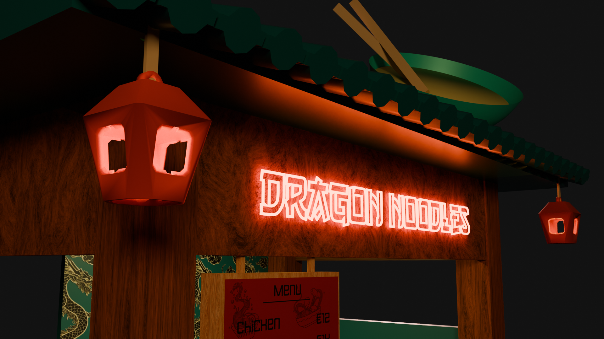
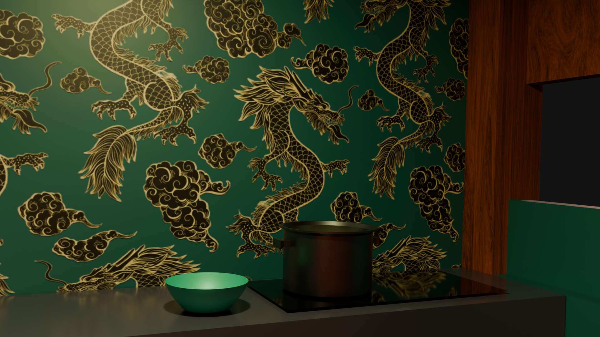
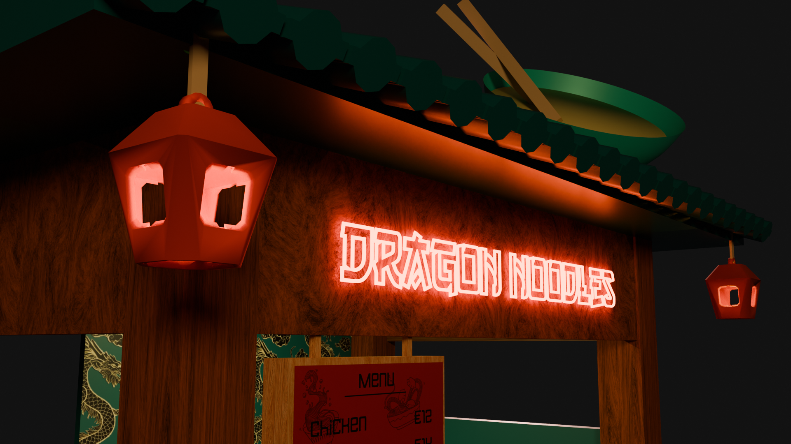
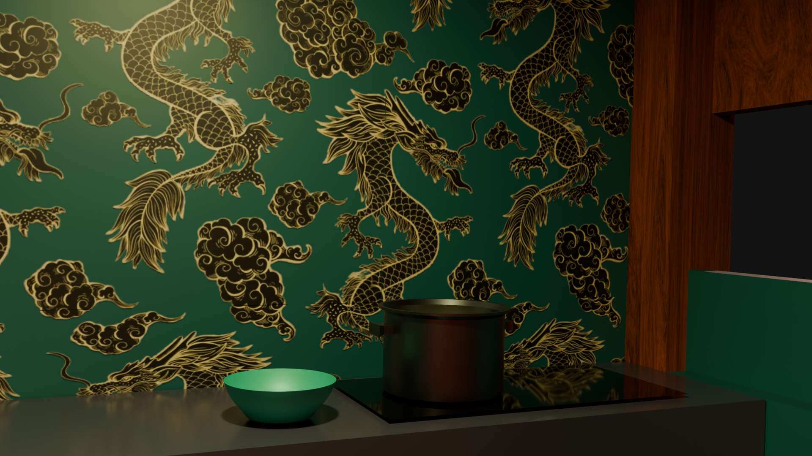

3D Foodtruck Design
Voor het vak 3D Design modelleerde ik in Blender een foodtruck/foodkiosk. Focus: modelleren, materialen, belichting en presentatie.

Voor het vak 3D Design modelleerde ik in Blender een foodtruck/foodkiosk. Focus: modelleren, materialen, belichting en presentatie.
Ik vertrok van warme street-food vibes, matte materialen en compacte kiosk-verhoudingen.

Base mesh → details → UV’s → eenvoudige materials. Hieronder enkele procesbeelden (incl. wireframe) die het verloop tonen.


 



Ik testte AI-enhancement om ruis te verminderen en contrast te verbeteren. Hieronder een vergelijking (schuif voor/na).
AI-enhanced beelden worden als post-processing getoond; originele renders blijven leidend.
Ik leerde efficiënter modelleren (modulariteit, bevels, ngons vermijden), basics van UV en materials, en hoe lighting/renders het verschil maken. Volgende keer wil ik een simpel rig/animatie toevoegen (serving hatch, wielen) en meer variatie in materials.